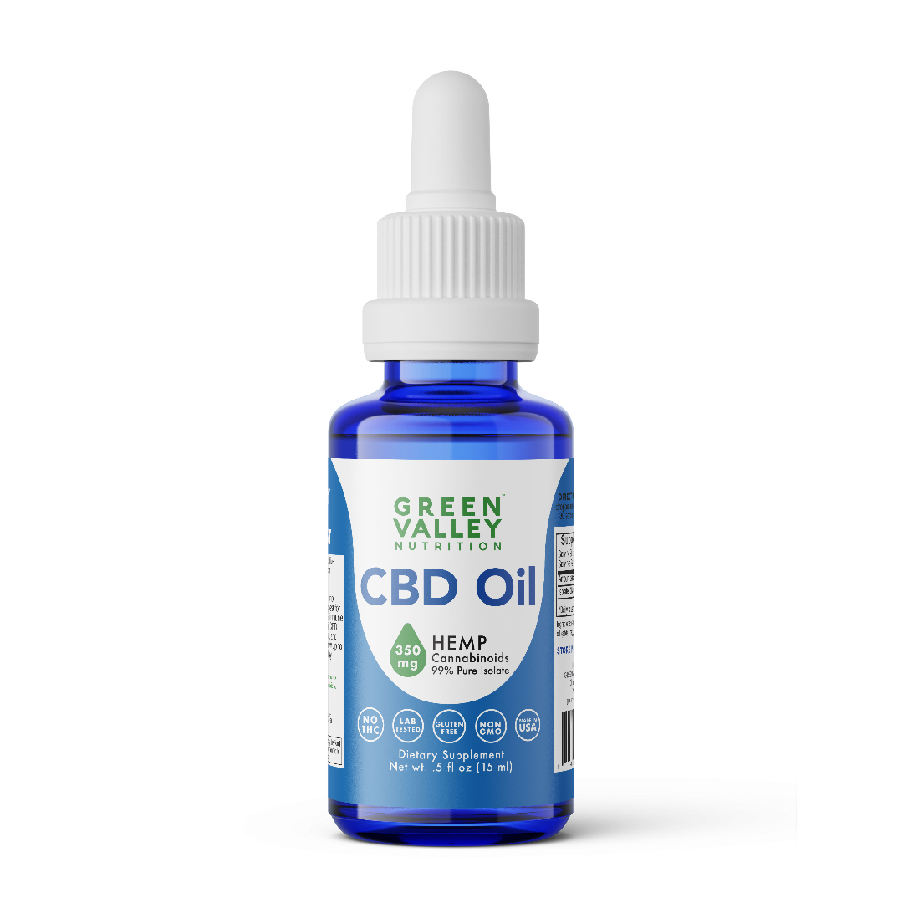
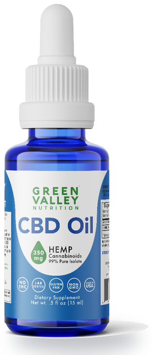
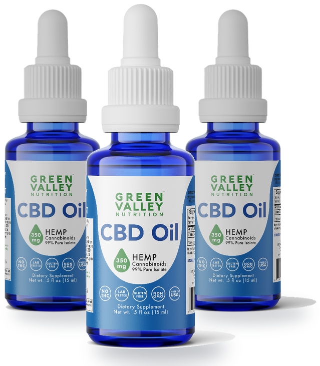
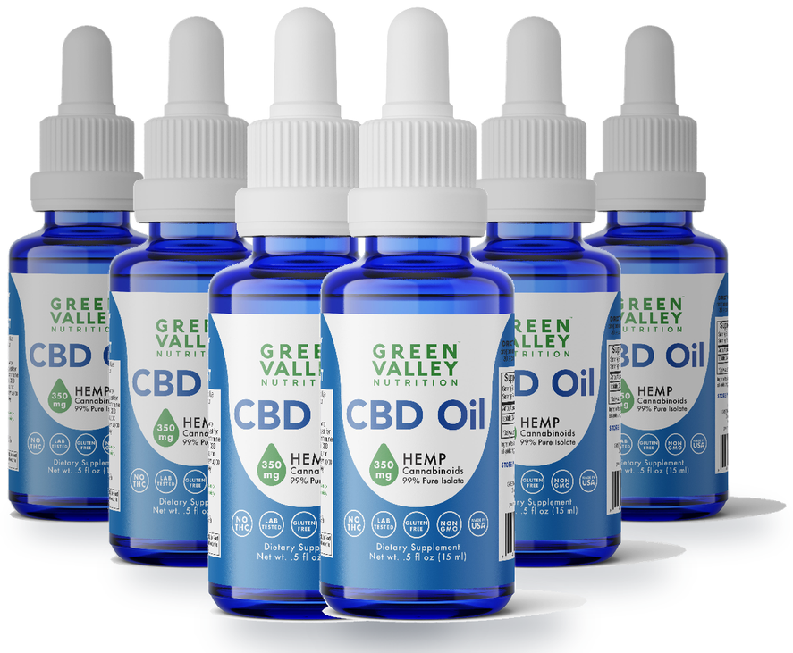

If you are here, you read the first part.
You know it was not Tourette’s, that it was an infection nobody closed out, and that the thing which brings the inflammation down is the one thing a child cannot stay on.
So here is the part I have to tell you honestly, because it is how I got here.
I need to tell you this part honestly, because it is how I got here and because I think it will matter to you.
It was marijuana. I was in high school. I knew it was illegal.
My parents were completely anti-pot and it was a hard decision.
But for the first time, something worked.
My parents had stopped at nothing.
Countless hours, tens of thousands of dollars, the best hospitals in the country.
And I found relief in the back seat of a car.
I remember thinking: wasn't this the goal? Isn't this what I was supposed to be doing, finding something that helps?
They had caught me more times than I can count.
Pulled it out of my pants pockets in the laundry, smashed my pipes, grounded me.
Everything to make me stop.
One night I came home around bedtime and my dad turned around from the couch.
"Hey, E. Were you smoking tonight?"
I asked him why he was asking.
He said, "Well, you're just so calm. You're not ticking."
A light bulb went off.
I said, dad, that is why I smoke.
You just said it yourself.
I'm not ticking and I'm calm.
They never approved.
But they lightened up after that night, because he had answered his own question.
It was obvious to me.
And now it was obvious to the man who most wanted it not to be true.
Every appointment until this one had been an in-and-out.
He has Tourette's, he has anxiety, here is a pill to try.
Then I was referred to a specialist who ran a home for foster children. Nothing fazed her.
Sound machine going, corner office looking out over a pond.
She sat with me for an hour.
She was not in a hurry to get me out of her office.
And she asked me a question no doctor had asked:
Is there anything you are doing right now that makes you feel better?
It was the first time I ever admitted to an adult that I was smoking.
I braced for her to call my parents in, or reprimand me, or at minimum tell me to stop.
She nodded, wrote something on her pad, and said: if you found something that helps you, you should probably do that.
This was Virginia, when it was completely illegal, and I had already been in trouble for it repeatedly.
And a medical professional we were paying to see was telling me to listen to my body.
You have been to all these doctors and none of it worked.
You found something that works.
For the first time I was not being judged for doing the thing that was helping me.
Adults in my life had told me I was going to end up in prison. That I was a bad person.
She told me I might be onto something.
She was right about the something. She just could not tell me which part.
Because here is what it actually cost me.
Lethargy. No personality.
Falling asleep at my desk.
Starting every single day by getting high before I could face it.
I traded a boy who could not sit still for a boy who was not really there.
My tics were quieter and so was everything else about me.
That is the trade every parent is terrified of, and they are right to be.
It is the same trade the strongest medications offer.
Quieter child, less child.
What I needed was the part of the plant that calmed me down without taking me away.
That is CBD.
Same plant, and the compound responsible for the relief, without the compound responsible for the high.
After college, I moved to Colorado to work on a farm.
The farm did not fix me.
But it showed me what feeling better was supposed to be for.
Rows had to be finished. Plants needed water.
Produce needed to reach the market.
At the end of the day, I could point to something and say:
I did that.
For years, nearly all my attention had been on me. Am I going to tic? Did somebody see?
When can I get high again?
On the farm, my attention had somewhere useful to go.
But I was still smoking cannabis in the morning and evening.
I had changed my surroundings without changing the bargain.
The farmer's son, Kyle, knew why I used it.
I told him what I wished existed:
Something that could give me the calm without requiring me to leave the day.
Then Kyle asked: "Have you ever heard of CBD?"
I said no.
He explained that CBD came from the cannabis plant but did not produce the intoxication I associated with THC.
Then he told me his cousin was growing hemp nearby.
I had an opportunity to try it.
My first use was inhaled.
That is part of my history, not a recommendation for somebody else.
I remember waiting for the familiar high.
It never came.
I felt calm, but I was still completely there.
I did not feel stoned.
I did not feel flattened.
I could get up, think clearly, work, and follow through.
That was the combination I had spent years looking for.
Not merely quieter. Calmer, and still me.
CBD became a supportive part of my routine.
My experience does not prove that CBD treats PANDAS or motor tics.
It cannot predict what another person, especially a child, will experience.
What I can tell you is what happened to me:
CBD was the first thing I personally experienced as giving me meaningful calm without making me high or making me feel less like myself.
That did not rebuild my life for me.
It made rebuilding feel possible.
Think about trying to repair a house while a fire alarm sounds every few seconds.
You may know what needs fixing.
The tools may be sitting beside you.
But the alarm keeps taking over.
For me, CBD lowered the alarm.
Then I had to pick up the tools.
I changed my environment.
I built structure into my days. I exercised.
I left relationships and habits that kept pulling me backward. I returned to my faith.
I learned to keep commitments to people beyond myself.
None of that happened overnight.
For years, I had collected evidence that I was broken, difficult, and trapped.
Now I was collecting evidence that I could contribute and that somebody could depend on me.
That is how my identity came back.
I call it nature's most powerful anti-inflammatory.
Natural plant extract, virtually zero downside, no toxicity, not addictive.
And this is the part that matters most to a mother in that corner: it can be taken long-term without risk. It is not a thirty-day tool.
That is precisely what steroids cannot offer.
It is not a marijuana product.
It does not get your child high.
It does not override their natural development.
What it does is work like a signal.
A whisper to the nervous system that it is safe to settle.
Not a sedative. Not a knockout punch. A dimmer switch that gently turns down the static.
Instead of flipping things on or off, it helps your child find the quieter middle. Not sedated. Not agitated. Just regulated.
There is a system it works through, and it is worth knowing the name.
Every child has an endocannabinoid system, a signaling network that holds the body in balance.
Think of it as the internal thermostat for mood, movement, focus, and stress.
When the brain is inflamed, that thermostat cannot keep up.
It is like trying to cool a house when the thermostat's sensor is glitching. The signal to turn down the heat never fully lands.
The goal is not to override your child's system.
It is to help it do the job it was built for.
Shannon et al. (2019) found 79% of patients reported decreased anxiety scores within the first month of CBD use. The World Health Organization (2018) described CBD as generally well tolerated with a good safety profile, and non-addictive.
There is no miracle pill.
Doctors and parents keep hoping for one and it does not exist.
Healing took work.
Retraining how my brain answered the triggers that set me off. Changing habits.
Unglamorous daily things nobody sells in a bottle.
What CBD did was lower the alarm enough that I could finally pick up the tools.
The drops are not the plan. They are what makes the plan possible.
The proof is small and it is not on a chart.
I had given up reading for years, because I would tear the pages, pound my fist into the book, read the same sentence over and over.
Once the alarm came down, I picked books back up.
Now I start my mornings with one.
I used to start them by getting high.
The supplement industry is largely unregulated.
That sentence sounds boring until you are the one measuring drops for a five-year-old.
Here is what it means in practice.
I tried products along the way that did nothing at all.
Not because CBD does not work, I knew by then that it did, but because of what was actually in the bottle.
Some were inferior quality.
Some simply did not contain enough CBD to do anything.
If a label says 25mg per serving and the bottle holds half that, you are not running a failed experiment on your child.
You are running no experiment at all, and you will conclude the wrong thing and stop.
Then there is the part almost nobody explains to parents.
Most CBD on the shelf is a whole-plant extract.
What is in it shifts with the crop, the harvest, how it was stored, how it was extracted.
Which means the bottle you buy in March and the bottle you buy in September are not quite the same product.
Nobody is being dishonest about it.
It is genuinely impossible to hold a plant extract steady.
For most adults, that is fine.
For a child whose symptoms already come and go on their own, it is a real problem.
If something changes this month, you will not know whether it was your child or the bottle.
The alternative is an isolate.
One compound, nothing else riding along, the same every time.
When you are watching your kid this closely, the formula has to be the thing that does not move.
By the end of that search I had a list.
Six questions, and I could not find a single product that answered all of them.
That list is not complicated.
It was just nobody's job to hand it to my mother.
When I came back to Virginia, you could not even find this stuff.
That is hard to imagine now.
But at the time, if you said CBD, people heard marijuana, and the conversation was over.
The thing that had given me my life back was something I could not reliably buy, and could not mention without watching someone's face change.
So I started looking for a version I could trust, and that turned out to be its own search.
Some products did nothing at all.
Others had ingredient lists as long as my arm, or testing I could not verify, or no honest way to know what was actually in the bottle.
My mother had already been handed enough bottles that promised things.
I kept thinking about what it would have meant if someone had put a clean one in her hands in year three instead of year eleven. Not a miracle.
Just something she could read the label of and understand, that she could give me every day without a new thing to worry about.
Nobody was making that for families like mine.
The people who needed it most were the ones nobody wanted to sell to, because kids with PANDAS and autism and ADHD are exactly the customers you get criticized for having.
I understand the criticism.
I would rather be criticized than watch another mother spend eleven years the way mine did.
So I built the one I could not find. That is why Green Valley Nutrition exists.

Organic CBD isolate and organic MCT coconut oil. That is the whole formula.
No cartoon packaging. No candy flavoring.
This was not made to trick your kid into taking it.
Before using a bottle, compare its batch information with the certificate on our site. If they do not match, ask us for the correct report.
When your child is already struggling, the last thing you need is another mystery variable.
My mom is the last person on earth who would ever try cannabis.
She does not want to be high.
She was never going anywhere near it.
She takes our CBN formula now, for sleep.
So does my mother-in-law.
My dad uses our pain cream for his back.
She did not come around because her son sells it.
She came around because she finally understood the difference between the plant and the high, and because she will not touch the sleep medications once she knows the risks.
The woman who spent eleven years and $56,576 looking for something safe enough for her son now keeps it on her own nightstand.
It does not work like a light switch. It works like a ripple.
You may not notice everything at once, but over time you look around and realize your home feels different.
"Our 11 year old son has PANDAS with significant flareups occurring 3-4 times a year. Symptoms can last for weeks on end. Within 4 days of starting the CBD Oil, his motor tics became barely noticeable. After two months of taking the Drops he's more relaxed, sleeping deeply through the night, better appetite, and clearer skin."
"I have two kids with PANDAS. We're still attempting to get treatment. By some miracle 4 people suggested CBD. Then I found Ethan's story and I felt like I needed to try. It's definitely calming things down. I would say the symptoms are tamped down 85-95% for the most part which feels like a miracle!"
"My child has ADHD and tics and was on medication with all kind of side effects, decided to give these drops a try. Within 3 days he is more focused and back to himself!"
"So thankful I found Green Valley Nutrition! The CBD oil has made a huge difference in my sons PANS/PANDAS flare. I cannot thank you guys enough!"
— Julie M., United States
These are individual customer experiences, not a guarantee of what another child will experience. Results vary.
You are not the kind of mother who rushes decisions. You read labels. You ask questions.
You cross-reference everything with your gut, because the last forty things did not work and you are the one who has to look at him in the morning.
Cautious parenting does not mean doing nothing. It means doing the right thing, when the time is right.
CBD Oil Drops for Kids
The #1 Pediatrician-Recommended CBD
★★★★★ 4.9/5 "Outstanding" · 5,000+ verified reviews
Here's what you get:
Choose how long you want to give it:

1 Month
1 bottle
$69
Try it and see.

3 Months
3 bottles
$149
Save $58
Long enough to actually tell.

6 Months
6 bottles
$269
Save $145
So you never run out in the middle of something that is working.
100% risk free · 365-day money-back guarantee
No monthly subscription. No strings attached.
Your purchase is backed by our 365-day money-back guarantee.
If at any point in the next year you feel this is not the right fit, for your child, your routine, or your values, we will refund you. No hard feelings. No hassle.
Because peace of mind shouldn't have an expiration date.
No.
It contains 0.0% THC, third-party verified, so there is no psychoactive effect, ever.
The lab report currently published for the Kids 350mg Oil Drops lists delta-9 THC, THCA, total THC, and delta-8 THC as not detected.
Read the report for the batch you receive.
Yes.
Clearing the underlying infection is the first prong and it belongs with your physician, usually with antibiotics.
The drops are for the second prong, the inflammation that drives the symptoms.
One does not replace the other.
Start with half a dropper, roughly 6mg, once daily.
You can increase to a full dropper, roughly 12mg, if needed.
Always start low and go slow, and speak with a healthcare professional who knows your child.
Yes.
It is formulated to be safe for nightly or daily use, which is the point.
Unlike anti-inflammatory steroids, it is not a thirty-day tool.
As always, consult your pediatrician for guidance specific to your child.
Most parents begin using this with kids age 5 and up, though every child is different.
More and more physicians are recommending our products for children, so ask your healthcare provider first.
Organic CBD isolate and organic MCT coconut oil. Two ingredients.
Yes.
It is designed to complement, not replace, your routines, supports, and therapeutic tools.
It is what made the rest of my own work possible.
Experiences vary.
Some reviews describe changes within days, others describe using it consistently for longer.
We offer a 365-day money-back guarantee.
If it is not a fit, we will make it right.
No.
This two-bottle offer is a one-time purchase, with no monthly commitment.
The people around me had a question back then.
My dad, my girlfriend at the time, the ones who knew what I was capable of.
They would say it out loud:
Where's Ethan gone? Get Ethan back.
My mom never asked it.
She just refused to stop looking.
Years drug by, I gave up hope, and she kept reading.
That is what the $56,576 actually bought: eleven years of a woman who would not accept that this was the new Ethan.
I was still there.
What I needed was enough quiet to reach myself.
CBD gave me that, and it did not cost me the day.
Then I used that calm to work, exercise, repair relationships, return to my faith, and become someone my family could depend on.
Today, the boy who could not put down his toothbrush helps his daughters brush their teeth.
If you are the one still reading at 2am, you are not doing nothing.
You are doing what she did.
Start somewhere.
CBD Oil Drops for Kids
1 Month
1 bottle
$69
Try it and see.
3 Months
3 bottles
$149
Save $58
Long enough to actually tell.
6 Months
6 bottles
$269
Save $145
So you never run out in the middle of something that is working.
Secure checkout · Free shipping · No monthly commitment
These statements have not been evaluated by the Food and Drug Administration. This product is not intended to diagnose, treat, cure, or prevent any disease. This page describes Ethan Pompeo's personal experience and does not predict another person's results. PANDAS and PANS require medical diagnosis and treatment of the underlying infection by a qualified physician. Consult an appropriately qualified healthcare professional before giving a child CBD, particularly if the child takes medication or has a medical condition.